Paso nº1: Acceder a Odoo e instalar la versión que queramos

En este caso, como la versión 16 ya no se encuentra en la página oficial de Odoo, se descargará la Community 17

Paso nº2: Al proceder a la instalación, es importante tener la configuración mostrada en la captura, ya que Odoo necesita tener instalado el servidor de base de datos PostgreSQL, que se instala por defecto con Odoo. Hay que asegurarse que las dos primeras opciones tengan un tick verde (Odoo Server y PostreSQL Server). Avanzamos con la instalación dando next y esperamos a que se instale


Una vez termina, le damos a Next para acabar con la instalación

Paso nº3: Una vez tenemos Odoo instalado, por defecto se nos abrirá el navegador con un formulario para crear una base de datos. Es importante: marcar la casilla "Demo Data" para disponer de registros iniciales para que hagan que al instalar los módulos se tengan datos para mostrar. Y MUY IMPORTANTE GUARDAR EL MASTER PASSWORD, SERÁ NECESARIO DESPUÉS

Si lo hemos hecho todo bien, al esperar alrededor de un minuto después de crear la base de datos, nos redirige a un login, en el cual introduciremos el correo que hemos usado para registrarnos + la contraseña, NO LA MASTER

Esta es la página donde nos debería redirigir al completar el login con éxito, dando por finalizada la instalación

En este caso, el módulo que se instalará será el de Inventario. Se cree que dicho módulo es óptimo para la correcta gestión de las actividades de inventario y logística de la PYME

Al activarse el módulo, en la esquina superior izquierda (donde aparecen nueve cuadrados), hacer clic para desplegar un menú. Debería aparecer el instalado
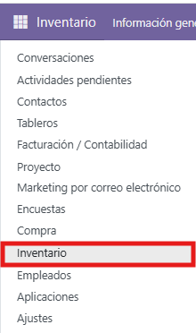
Para configurarlo, en la barra superior, hacer click en Configuración > Ajustes
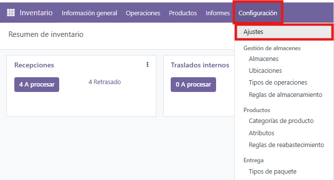
En esta página podremos configurar el módulo instalado, donde aparecen un montón de opciones para gestionar. Por ahora, activaremos dos: Traslados internos y dropshipping (solicitar a proveedores que entreguen a sus clientes)
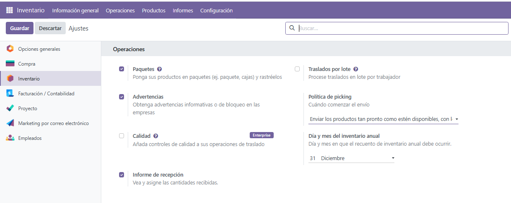
Para ejecutar una operación, de por ejemplo dropshipping, habrá que hacer clic en 'A Procesar', y nos redirige a una web para gestionar dicha operación
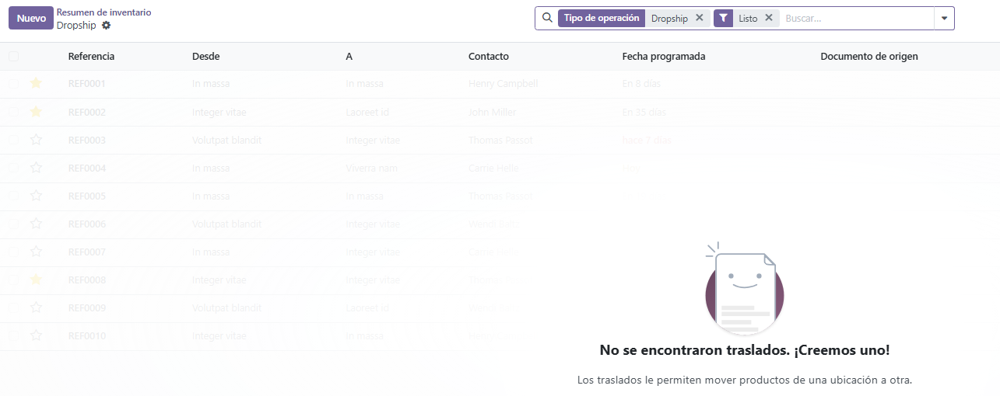
Se nos desplega esta web para gestionar una nueva operación, en este caso, al ser un ejemplo:
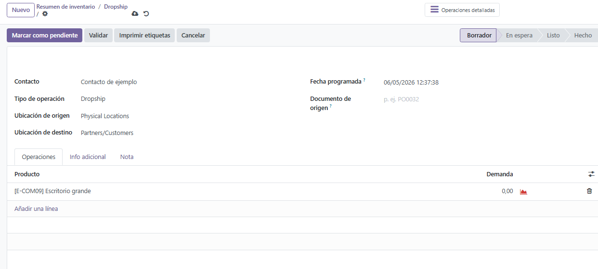
Creamos este Dropship de ejemplo (Aclaración: Asegurarse que el tipo de ubicaciones de origen y destino no sean 'Vista', porque si no nos saltará un error).
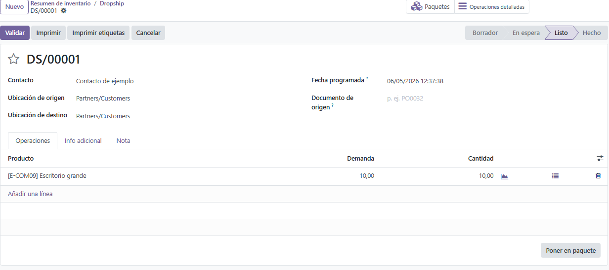
Al 'poner en paquete' y 'validar', en el panel de la derecha debería salir algo así:
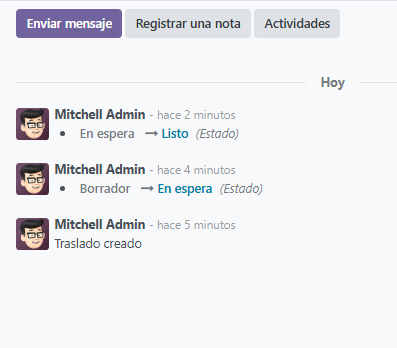
Al volver, aquí tendremos la orden procesada y lista
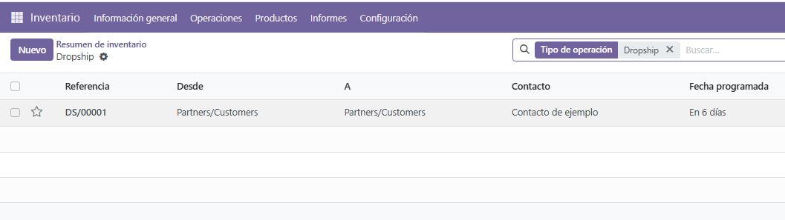
Hacemos algunas más de prueba para ver como serían, pero este sería el resumen de esta operación
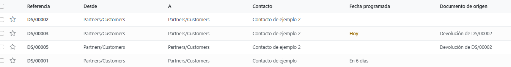
En cuanto a los traslados internos, se realiza de prácticamente la misma forma. La única novedad es la opción de 'Tipo de Operación'
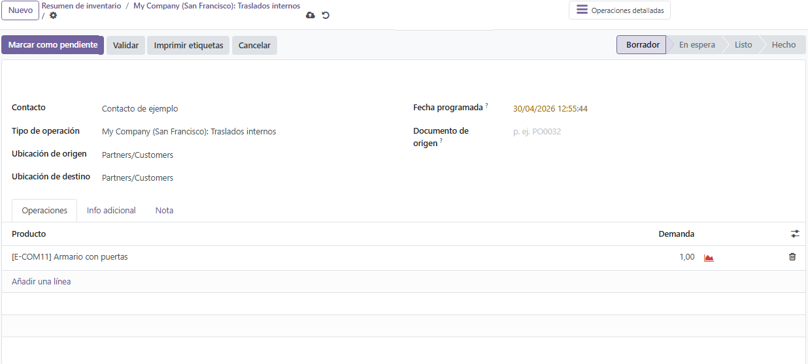
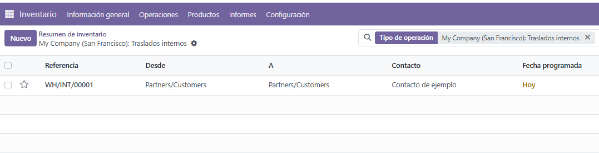